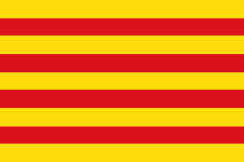
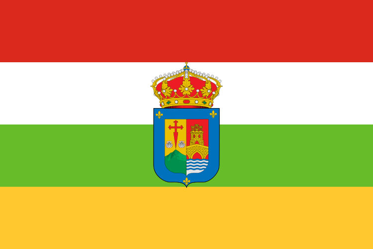

Es una campaña de recogida y donación de alimentos no perecederos organizada por la comunidad educativa alumnos, profesores y familias para dar respuesta a la precariedad alimentaria de personas y familias vulnerables en el entorno local del colegio. Se basa en el valor de la fraternidad, buscando que cada estudiante aporte "un kilo" de alimentos como gesto de compromiso social.
Comunidades autónomas en las que se realiza
01. La Salle La Seu d'Urgell

02. La Salle Sagrado Corazón
03. La Salle Virlecha
04. Colegio La Salle Virgen del mar
05. CC La Salle Inca 
06. La Salle - La Estrella

07. La Salle Institución
08. Colegio San Eutiquio La Salle